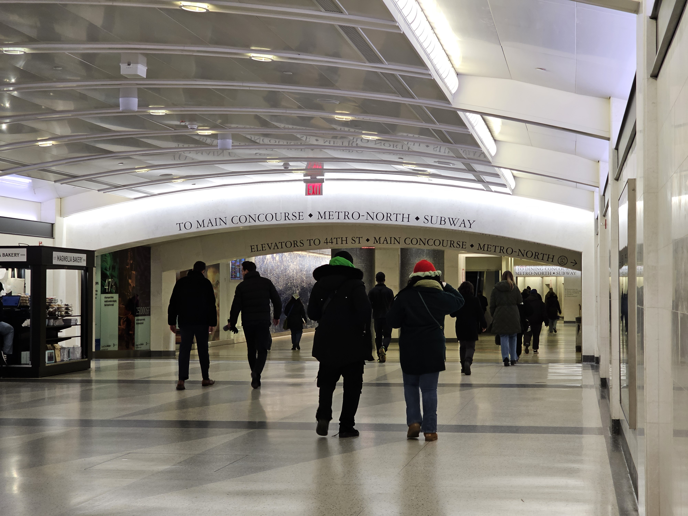
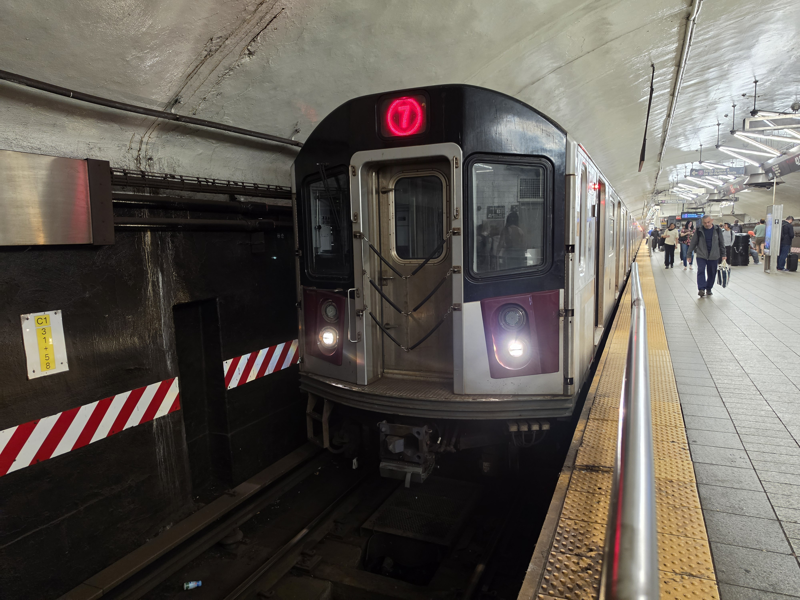
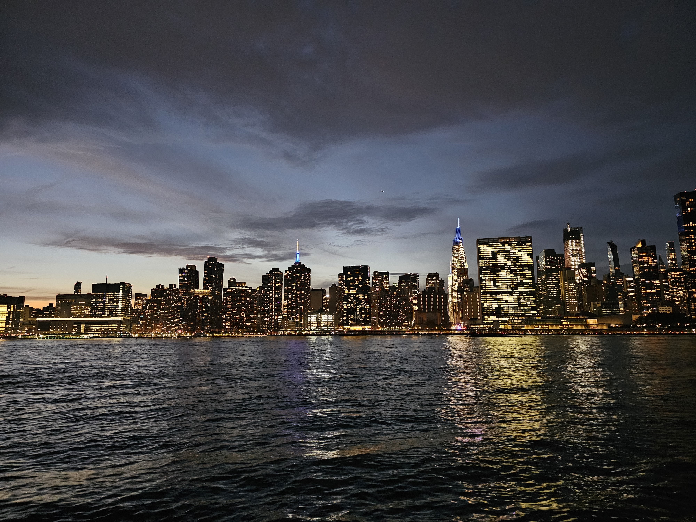
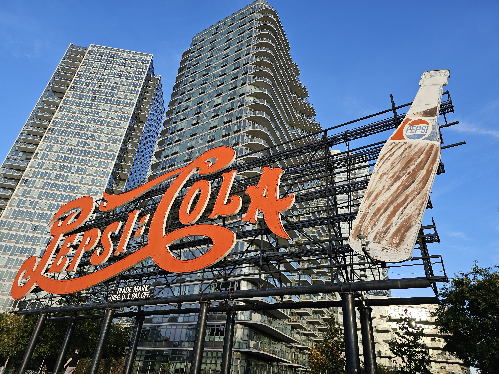
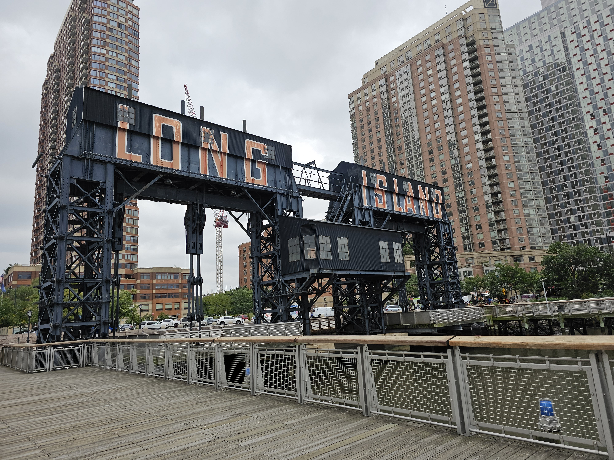
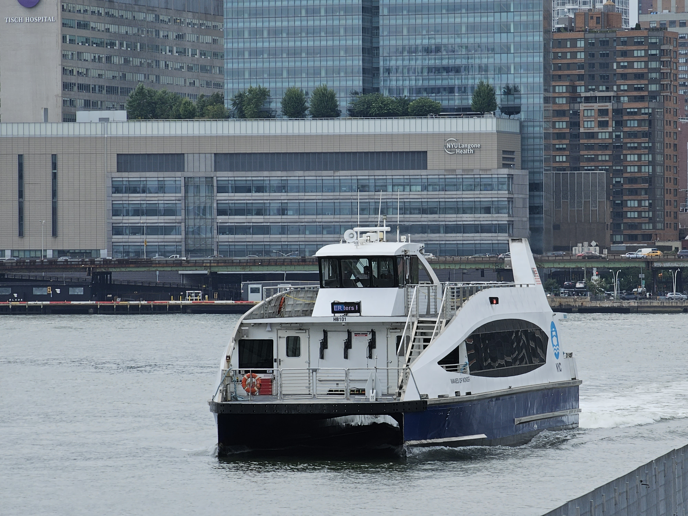

NOTE: Vernon Blvd-Jackson Avenue is currently NOT ADA-Accessible.
 Train, and get off at Court Square instead.
Train, and get off at Court Square instead.
Get off, go down to street level, walk to Jackson Avenue and 23rd Street.
Get on and board a Hunters Point bound Q101 Bus, and ride it.
Get off at Borden Avenue and 5th Street, and walk south towards Center Blvd, then enter the park and walk along!
The Subway and Bus Fare is $3.00. Pay with an OMNY Card or Contactless Payment, or a MetroCard.
MetroCards are also accepted, but can no longer be bought or refilled.
By Subway
Exit from the platform your LIRR train arrives on and head to the mezzanine. Then, take the 45th Street escalators to the concourse.
Exit from the LIRR Platform your train arrives on.
Head to the mezzanine, then walk to and take the 45th Street escalator bank up to the concourse.
Elevator: Take the elevator to the mezzanine. Then, take the elevator located between the 46th and 47th Street areas, up to the concourse.

Make your way WEST towards 43rd Street on the concourse, following signs for the subway.

Head towards One Vanderbilt (glass doors on the right side at 43rd), and make your way up by the escalator or elevator to Floor -2.
Then walk straight to the turnstyle area. Pay, and enter the subway!
Turn left and walk through the pedestrain tunnel, following signs for the Train.
After you go down the stairs, escalators, or elevators, and enter the Train Platform.
Take a Queens bound Train, ONE Stop, and get off at Vernon Blvd-Jackson Avenue.

Exit the station, and walk towards 49th Avenue on Vernon Blvd. Then walk south along 49th Avenue, until Center Blvd.
You will be faced with the breathtaking views of the Manhattan skyline and the several parks and shops surrounding Gantry State Park!!
Some Tips and Tricks
*Before you board your LIRR train to Grand Central, board towards the front, which will bring you closest to the subway.
**If your one with ADA-needs, board towards the center of the train. This is where the elevators are located at Grand Central, giving you the shortest travel time.
At Grand Central, there is a set of elevators that will take you up from the mezzanine to the concourse.
It's located between the 46th Street and 47th Street escalator banks on the mezzanine, so look for signs.
Subway Tips
A Subway ride costs 3.00. Pay using an OMNY Card or contactless payment.
MetroCards are still accepted for payment, but can no longer be bought or refilled.

If you need to buy a OMNY Card, machines are located around the turnstyle area.
Board the train towards the rear, ensuring you the quickest exit.
Expected Time Taken - Minutes
To get to the 43rd Street Concourse from the LIRR tracks, it will take you roughly 5-7 minutes depending on your speed, where you get off, and how you get there.
To go by One Vanderbilt from the 43rd Street hall to the turnstyle area, takes 3-5 minutes, depending on your speed.
To get from the turnstyle area, ride the train, and walk to the park, takes roughly 20 minutes,
Map Overview
Below is a map showing the route from Grand Central (near the One Vanderbilt Area) to Gantry State Park.
View A Google Maps Route from Grand Central LIRR to Gantry State Park
Gantry State Park

BONUS: Around Gantry State Park, besides the beautiful skyline, there's a few places nearby you can check out!

The Famous Pepsi Cola Sign!

The Long Island Gantries. Fun fact, these were part of the LIRR North Shore Freight Branch

Ride the East River Ferry. Costs $4.50